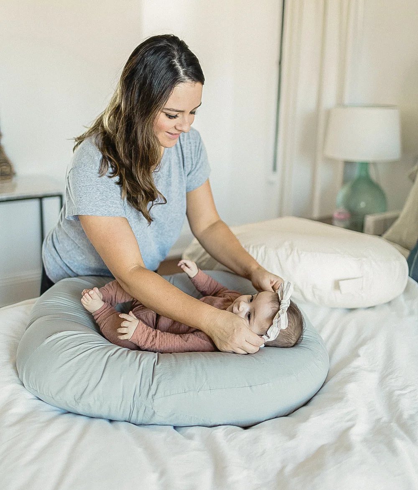

Key Points
듀얼 역류방지쿠션 겉커버
핵심 포인트

KEY 01
특허받은 올바른 각도
우리 아이의 상황에 맞게 특허받은 듀얼 각도 시스템으로 안정적인 자세를 만들어줍니다.

KEY 02
100% 국내산 알러지케어 원단
믿을 수 있는 100% 국내산 알러지케어 원단으로 아기 피부에 안심하고 사용하세요.

KEY 03
다양하게 사용 가능
역류방지 외에도 터미타임, 플레이 매트, 빈백 등으로 다양하게 활용할 수 있습니다.